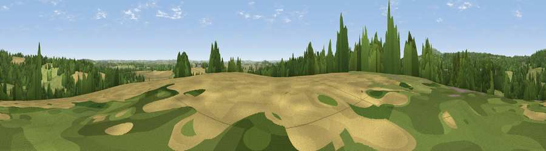

Viewpoint near The Wyke
#24655 in England · top 57% of its area beats it · near The WykeWhere it is
The exact computed spot (SJ 71825 05775). Click the marker for map links.
The view, rendered

A 360° render of this exact spot computed from the terrain model, tree cover and land cover — summer colours, afternoon light, calibrated against photographs of famous viewpoints. Real trees, hedges and buildings will differ in detail.
The panorama
Grey silhouette: terrain skyline in each direction (720 bearings, Earth curvature and refraction included). Dashed green: skyline with trees (+15 m) and buildings (+8 m) as obstacles. Blue strip: how far the ground is visible on each bearing.
Where the view opens
Wedge length = distance to the farthest visible ground on that bearing (vegetation-aware). Rings at 10, 25 and 50 km.
What fills the view
35% woodland · 31% grassland · 21% cropland · 12% built-up
Angular shares of the visible panorama (visual magnitude), not map area. Landscape diversity 0.58 (0–1 Shannon).
Key numbers
More beautiful places nearby
The staircase of upgrades: each row has a higher view potential than everything closer. Driving times are estimates from straight-line distance, calibrated against real road routing — check an actual route before setting out.
| Place | Direction | Drive | Score |
|---|---|---|---|
| Viewpoint near The Wyke | E · 3 km | ~6 min | 47.5 |
| Viewpoint near Madeley | WSW · 3 km | ~8 min | 54.4 |
| Viewpoint near Telford | NW · 4 km | ~10 min | 59.1 |
| Ketley Bank | NNW · 5 km | ~11 min | 61.0 |
| Viewpoint near Priorslee Village | N · 6 km | ~13 min | 70.4 |
| The Ercall | WNW · 8 km | ~17 min | 79.4 |
| Viewpoint near Little Wenlock | WNW · 9 km | ~18 min | 84.2 |
| The Wrekin | WNW · 9 km | ~18 min | 85.0 |
52.64897, -2.41788 · source: screening · position refined by local search. Computed location — check access rights before visiting.